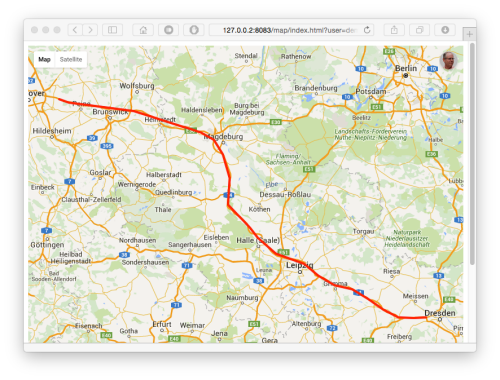
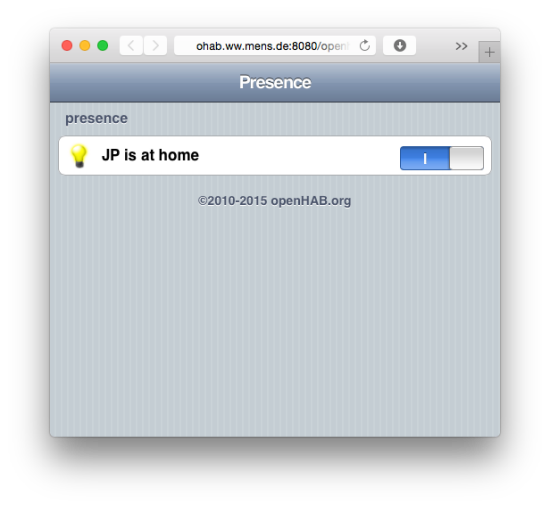

Clients
Using our OwnTracks app is cool, but what do you do with the location data the apps send (i.e. publish) to the MQTT broker? We have some suggestions. (Do remember however, that you cannot do this in public mode.)
You know that OwnTracks publishes location information to an MQTT or HTTP endpoint. The data it publishes is transferred in a particular format called JSON, and this is what it looks like.
When you've got your endpoint set up, and OwnTracks configured to use it, you'll want to do something useful with the data, and the following sections introduce you to some of the existing clients you can utilize for doing that.
mosquitto_sub
mosquitto_sub is a very basic command-line client provided by the Mosquitto project. However, it is brilliantly useful, and you can also use it for long-time collection of data by having it run in the background with stdout pointing to a file.
In it's most basic invocation, you have the program connect to your broker and subscribe to the topics you're interested in.
mosquitto_sub -h localhost -p 1883 -v -t 'owntracks/#'
mosquitto_sub and it's counterpart, mosquitto_pub for publishing to a broker, support a slew of options. It'll be worth your while to study their manual page.
Recorder
We recommend our very own OwnTracks Recorder because it's lightweight, relatively simple to set up, and because it offers a lot of features. It stores location data published by the apps by subscribing to an MQTT broker, and it enables you to access that data in a variety of formats. The best part is: it doesn't require a heavy external database of any kind.

And the best is, you can configure the Recorder to also accept the HTTP POST requests from the apps, so it's the best companion for the OwnTracks apps in HTTP mode as well.
Read more about the Recorder.
o2s
One of the clients we provide as part of the Open Source OwnTracks project is called o2s; the strange name stands for OwnTracks to Storage, and you can use this connected to your MQTT broker in Private mode, if you need a MySQL or PostgreSQL database. (We do recommend, however, that you use our Recorder (see above).)
Correctly configured (and it's not trivial), o2s connects to your broker and subscribes to location messages and other OwnTracks payloads. Upon receiving a location update, o2s will do a number of things:
- Perform a reverse-geo lookup (using your choice of either Google or XXX to do so) for the geographical coordinates received from the OwnTracks app
- Store the message and its details into a database (MySQL and PostgreSQL are supported)
- Alert via (future) plugins that a geographical region (waypoint) has been entered or left
The result of using o2s is that you get a database table (several actually) in which your OwnTracks locations are stored.
+---------------------+-----+------------+------------+------+--------------------------------------+
| tst | tid | lat | lon | cc | addr |
+---------------------+-----+------------+------------+------+--------------------------------------+
| 2015-05-27 06:23:36 | jJ | 46.7835540 | 17.2073088 | HU | Keszthely, Hévízi út, 8360 Ungarn |
| 2015-05-26 20:10:52 | jJ | 46.7710135 | 17.1829915 | HU | Alsópáhok, 760, 8394 Ungarn |
| 2015-05-26 14:32:50 | jJ | 46.9557636 | 19.4132377 | HU | Kerekegyháza, 5211, 6041 Ungarn |
| 2015-05-23 22:42:27 | jJ | 47.4986630 | 19.0438124 | HU | Budapest, Eötvös tér, 1051 Ungarn |
+---------------------+-----+------------+------------+------+--------------------------------------+
So, now that you have the OwnTracks locations being neatly stored for you, how do you visualize them on, say, a map, at a later point in time? Enter Pista.
mqttwarn
You'll recall (we hope) the discussion on MQTT and the analogy with the cauldron. mqttwarn, while not specific to OwnTracks, is another client you connect to your MQTT broker. We think it's worth mentioning (and both Ben and JP -- the creators -- are quite pleased with what it does).
mqttwarn lets you do things like tweet everytime OwnTracks reports a location (but do consider whether you really want that), send an e-mail when a loved one enters a particular region, etc.
openHAB
Presence detection in home automation is one of the most important pieces of the puzzle. Without it your smart home is effectively blind, and as a result can hardly be called 'smart' at all. There are very few automation rules that do not require some form of context in terms of human occupancy. Rules around security, lighting, music, even coffee machines -- all need to know if 'someone' is home before deciding whether to take action.

This is where OwnTracks steps in. In its simplest form it can be configured with waypoints (for home/work etc) that generate events whenever your phone enters/leaves these regions. These are sent to your own personal MQTT broker where your home automation software can react accordingly. The beauty of OwnTracks is two-fold - it is simple, you can disable the standard location reporting so all you get is the waypoint event/leave events, which is all your smart home cares about. The second is that, in private mode, all your data is 'yours' and yours alone - there is no cloud service collecting, storing and potentially mining your data.
Read more about openHAB and OwnTracks.
Home Assistant
Another home automation solution that can be used with OwnTracks is Home Assistant. Home Assistant allows you to track the location of people connected to your personal MQTT broker. It has a map to show their current location and can trigger automations based on entering and leaving zones.
See the demo for an example of the map with OwnTracks devices or read more about how Home Assistant connects to your private MQTT broker, how to enable OwnTracks support in Home Assistant and how to configure automations based on zones.
Roll your own
If you feel really brave, you can write your own program which subscribes to OwnTracks data, but don't forget to tell us about it!
Related
Here are some projects we know of which use and/or integrate OwnTracks and/or which are useful when using MQTT in general or OwnTracks in particular.
- MQTT Inspector for iOS, written by Christoph Krey, who also did our OwnTracks for iOS app. This is an indispensable utility for all things MQTT.
- the thing system ( code )
- A Clojure webapp that aims to manage information gathered from OwnTracks; clojure-mqttitude-backend
- An OwnTracks flow by Giovanni @juzam Angoli for Node-RED which publishes messages to pushover.net upon entering or leaving a geo-fence.
- MyMQTT is an app for Android which enables you to subscribe and publish to an MQTT broker.
- Stefano Costa cooks Italian pasta using OwnTracks.
- Matthew Bordignon made a small Web page which uses Websockets to display the barometer reading published by OwnTracks for iOS. (Screenshot.)